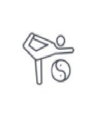

Evolución del Desarrollo Cognitivo (0-6 años)
El desarrollo cognitivo experimenta transformaciones asombrosas desde que nacemos hasta los seis años. Piaget, un psicólogo muy influyente, dividió este periodo en dos grandes etapas:
- De 0 a 2 años: Etapa Sensoriomotora
- De 2 a 6 años: Etapa Preoperacional
Desarrollo Cognitivo de 0 a 2 años: La Etapa Sensoriomotora
Los bebés aprenden explorando con sus sentidos y movimientos.
En este "período de inteligencia sensoriomotora" según Piaget, los bebés aprenden principalmente a través de sus sentidos y acciones físicas. Se divide en seis subetapas, donde descubren el mundo experimentando.
Un concepto clave aquí son las "reacciones circulares": acciones que el bebé descubre por casualidad (chuparse el dedo, agitar un sonajero) y que le resultan placenteras, por lo que las repite para intentar controlarlas y entender su efecto.
- 1ª y 2ª Etapas (Reacciones Circulares Primarias): El aprendizaje se centra en el propio cuerpo del bebé (ej: chupar, mirar sus manos).
- 3ª y 4ª Etapas (Reacciones Circulares Secundarias): El bebé empieza a interactuar con objetos y personas externas (ej: agitar un sonajero para oír el ruido).
- 5ª y 6ª Etapas (Reacciones Circulares Terciarias): Hacia el segundo año, experimentan activamente con el ensayo y error, explorando las propiedades de los objetos a través de acciones variadas. Aquí empiezan a pasar de la acción directa al pensamiento.
Desarrollo del Lenguaje de 0 a 2 años
El lenguaje se desarrolla rápidamente en los primeros dos años.
¿Cómo suena el balbuceo?
Sonido de bebé balbuceando. (Requiere archivo audio/baby-babble.mp3)
El desarrollo cognitivo es la base del desarrollo del lenguaje, que despega en estos primeros años:
- Neonato: Comunicación a través de reflejos (llanto) y expresiones faciales.
- 2 meses: Ruidos con significado (murmullos, llantos diferenciados, risas).
- 3-6 meses: Chillidos, gorjeos, sonidos vocálicos.
- 6-10 meses: Balbuceo (repetición de sílabas como "ba-ba", "ma-ma").
- 10-12 meses: Comprensión de palabras sencillas ("mamá", "papá", "no"), vocalizaciones con significado (aunque no sean palabras claras), uso de gestos.
- 12 meses: ¡Las primeras palabras reconocibles!
- 13-18 meses: Vocabulario que crece hasta unas 50 palabras.
- 18 meses: Periodo de aprendizaje rápido (hasta 3 o más palabras nuevas al día).
- 21 meses: Las primeras frases sencillas de dos palabras ("quiero agua").
- 24 meses: Frases de varias palabras.
Desarrollo Cognitivo de 2 a 6 años: La Etapa Preoperacional
En esta etapa, los niños desarrollan el pensamiento simbólico.
Esta etapa es crucial y está llena de cambios importantes. Lo más destacado es el desarrollo de la función simbólica y las características particulares de su pensamiento.
La Función Simbólica y su Importancia
Este período (2-6 años, o "segunda infancia") se caracteriza por la conquista de la capacidad de representación. Los niños ya pueden imaginar o representar objetos o acciones que no están físicamente presentes. También desarrollan enormemente la inteligencia verbal, usando el lenguaje para pensar y comunicarse de forma más compleja.
La función simbólica es, por tanto, la capacidad de usar un símbolo (una palabra, un gesto, un dibujo, un objeto usado de otra forma) para referirse a algo que no está allí. Es la base para el pensamiento abstracto futuro.
Manifestaciones de la Función Simbólica
Vemos la función simbólica en acción de varias maneras:
- Juego simbólico: Usar un plátano como teléfono, jugar a "papás y mamás", o hacer que los muñecos hablen. Reproducen la realidad a través del juego.
- Imitación diferida: Imitar una acción que vieron hace tiempo, aunque la persona o el modelo ya no esté presente (ej: un niño "afeitándose" por la mañana como vio a su papá la noche anterior).
- Dibujo: Representar la realidad gráficamente. Al principio son garabatos, luego formas reconocibles. Curiosamente, suelen dibujar lo que *saben* del objeto (partes internas, detalles ocultos) más que lo que ven desde un único punto de vista.
- Lenguaje: Usar palabras (que son símbolos) para nombrar cosas, ideas o situaciones. Se convierte en la forma de representación más potente y versátil.
- Imágenes mentales: Poder "ver" o "escuchar" cosas en su mente sin tener que percibirlas con los sentidos en ese momento.
El Pensamiento Preoperacional (Según Piaget)
Piaget llamó a esta etapa "preoperacional" porque, aunque los niños ya usan símbolos, aún no tienen la capacidad de realizar operaciones lógicas. Esto no significa que no sean listos, sino que su forma de pensar todavía no sigue las reglas de la lógica adulta. Está en una fase de transición hacia el pensamiento lógico.
Características (Limitaciones) del Pensamiento Preoperacional
El pensamiento en esta etapa presenta ciertas características o "limitaciones" desde el punto de vista lógico:
- Centración: Tienden a fijarse en un solo aspecto de una situación o un objeto e ignoran los demás. Un caso especial de centración es el...
- Egocentrismo: No es ser egoísta, sino tener dificultad para imaginar cómo se ven las cosas desde el punto de vista de otra persona. Si se tapan los ojos, creen que nadie puede verles a ellos tampoco.
-  Foco en la Apariencia: Se dejan llevar por lo que perciben visualmente en ese momento, sin considerar la realidad subyacente. Pueden pensar que alguien es más alto solo porque lleva un sombrero alto.
- Razonamiento Estático: Perciben el mundo en estados fijos, sin comprender bien las transformaciones o los procesos de cambio.
 Irreversibilidad: No entienden que muchos procesos pueden revertirse y volver al estado original. Si desinflan un globo, no comprenden que se puede volver a inflar a su forma original.
Irreversibilidad: No entienden que muchos procesos pueden revertirse y volver al estado original. Si desinflan un globo, no comprenden que se puede volver a inflar a su forma original.
El Principio de Conservación
Una clara muestra de estas limitaciones (centración, foco en apariencia, irreversibilidad) es la dificultad con el principio de conservación.
El famoso experimento de conservación de Piaget.
Los niños preoperacionales no entienden que una cantidad (de líquido, de masa, de número) sigue siendo la misma aunque cambie su forma o apariencia externa. Por ejemplo, si muestras la misma cantidad de agua en un vaso ancho y bajo y luego la viertes en uno alto y estrecho, el niño dirá que hay "más agua" en el vaso alto simplemente porque el nivel llega más arriba. Se "centra" solo en la altura del líquido e ignora la anchura del vaso y el hecho de que no se ha añadido ni quitado agua (irreversibilidad).
La Perspectiva de Vigotsky: Lo Social es Clave
A diferencia de Piaget, que ponía mucho énfasis en el descubrimiento individual del niño, Lev Vigotsky destacó la importancia del entorno social y la interacción con adultos y compañeros más capaces en el desarrollo cognitivo.
- Según Vigotsky, los niños no aprenden aislados; su desarrollo está intrínsecamente ligado a su contexto cultural y social.
- Los adultos actúan como guías, ofreciendo "andamiaje" (apoyo estructurado) y proponiendo desafíos ligeramente por encima de lo que el niño puede hacer solo.
- El niño es visto como un "aprendiz de pensamiento", cuyo crecimiento intelectual es estimulado por la interacción social.
- La cognición no es solo un proceso individual, sino una actividad social y colaborativa.
Vigotsky enfatizó el papel de la interacción social en el aprendizaje.
Desarrollo de Habilidades Cognitivas Específicas (2-6 años)
En esta etapa, también se consolidan y desarrollan habilidades específicas:
Desarrollo del Pensamiento Matemático:
La comprensión inicial de los números y conceptos matemáticos se ve favorecida por:
- La maduración cerebral.
- El desarrollo del lenguaje (que permite conceptualizar y nombrar cantidades).
- La exploración activa de objetos (contar, comparar tamaños, clasificar).
- El "andamiaje" de adultos (apoyo en tareas numéricas simples).
- Interacciones diarias que involucran números (contar juguetes, preguntar cuántos años tiene).
Desarrollo de la Memoria:
Aunque mejora, la memoria aún tiene limitaciones en esta etapa:
- Les cuesta recordar eventos específicos de hace mucho tiempo.
- Su corteza prefrontal, crucial para ciertas funciones de memoria, sigue madurando.
- Todavía están aprendiendo a usar estrategias de memoria de forma efectiva.
Lo que sí les ayuda a recordar son:
- La interacción social (hablar sobre eventos).
- La participación personal en las experiencias.
- Las conversaciones sobre lo vivido (recordar y narrar).
- Las preguntas específicas de personas cercanas.
El lenguaje actúa como un puente entre la memoria y la mente; los niños que aún no tienen mucho lenguaje pueden tener más dificultad para formar y recuperar recuerdos verbales.
Desarrollo del Lenguaje (2-6 años): ¡Explosión Verbal!
Esta etapa es un periodo sensible (óptimo) para el aprendizaje del lenguaje.
- Vocabulario: ¡Crece a una velocidad increíble! Pasan de unas 500 palabras a los 2 años a cerca de 10.000 a los 6 años. Esto implica aprender alrededor de 10 palabras nuevas al día, un fenómeno llamado "mapeo rápido".
- Gramática: Hacia los 3 años, ya manejan estructuras gramaticales básicas:
- Sujeto + Verbo ("Yo corro").
- Formación de plurales ("perros").
- Uso de tiempos verbales básicos (presente, pasado simple, futuro simple).
- Uso de pronombres (yo, tú, este, ese, mío).
- Formulación de preguntas simples.
- Uso de verbos auxiliares.
Un fenómeno común son los errores de "sobrerregularización": aplicar una regla gramatical aprendida a palabras que son excepción (ej: "rompido" en vez de "roto", "sabo" en vez de "sé", "andé" en vez de "anduve"). Esto demuestra que están aprendiendo las reglas activamente.
Zona de Desarrollo Próximo (ZDP) - Concepto Clave de Vigotsky
Vigotsky introdujo la idea de la Zona de Desarrollo Próximo (ZDP). Es la distancia entre lo que un niño puede hacer por sí solo y lo que puede lograr con la ayuda y guía de una persona más capaz (adulto o compañero).
La ZDP: lo que el niño puede hacer con ayuda.
Es en esta zona donde ocurre el aprendizaje más efectivo. Las formas gramaticales más complejas, por ejemplo, se aprenden a menudo dentro de la ZDP, con el apoyo y la corrección de los adultos.
Piaget vs Vigotsky: Enfoques Complementarios
Aunque sus enfoques difieren, son a menudo vistos como complementarios:
- Piaget: Se enfoca más en el desarrollo individual por etapas, en lo que el niño descubre por sí mismo y en las "carencias" lógicas de su pensamiento preoperacional. Cree que el niño necesita madurar para ciertas habilidades.
- Vigotsky: Se enfoca en el papel del entorno social y la interacción en el aprendizaje. Destaca la importancia de la ayuda y la estimulación para que el niño alcance su potencial dentro de la ZDP. Sugiere que la maduración puede ser impulsada por la estimulación.
Ambos nos ofrecen herramientas valiosas para entender cómo piensan los niños y cómo podemos apoyar su desarrollo.
Relación entre Desarrollo Sensoriomotor y Cognitivo Posterior
La exploración a través de los sentidos y el movimiento en la etapa sensoriomotora (0-2 años) sienta las bases para el pensamiento abstracto y lógico futuro.
- El bebé, al manipular objetos, entender causa-efecto (si golpeo el sonajero, suena), y desarrollar la permanencia del objeto, está construyendo los primeros esquemas mentales.
- Todos los procesos cognitivos básicos (percepción, atención, memoria, inicio del lenguaje) se desarrollan y refinan en esta etapa temprana.
Una escuela infantil que ofrece un ambiente rico en oportunidades para la experimentación sensorial y motora está contribuyendo activamente al desarrollo cognitivo presente y futuro de los niños.